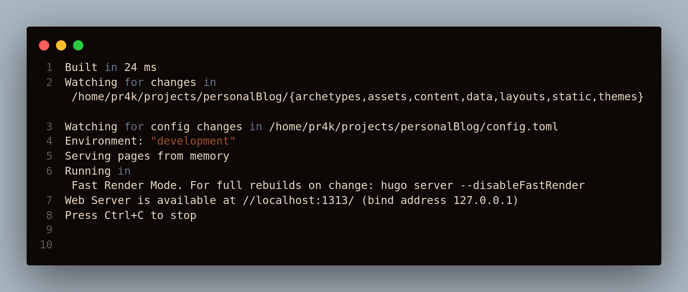
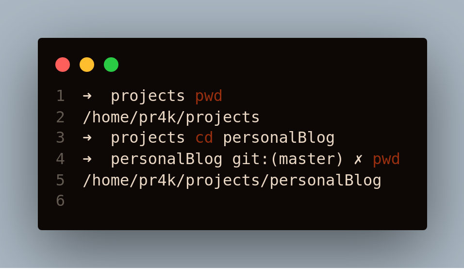
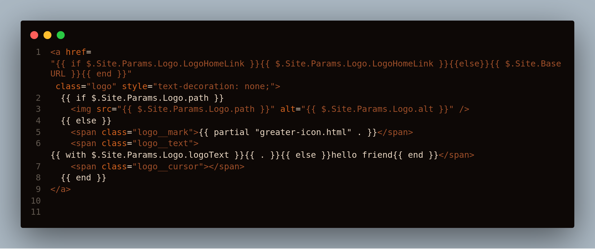
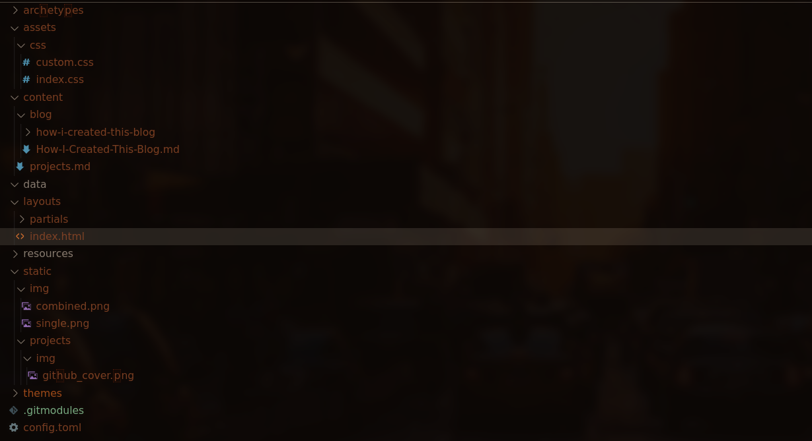

Creating A Blog In Hugo

Why Hugo
Hugo is a great tool to generate static website but honestly it is a boring framework to work with. There’s no fancy technology, neither you can create any funky functions to fetch your Github repo Readme or any of your Medium articles.
It uses Go at its core which was the one and only reason for me to go with Hugo, though later I found out the benefits and features which makes it unique and perfect for creating simple static websites like this blog. As hugo is built using go it makes it super fast which is a plus. Also the flexibility it provides like changing themes anytime you want without changing anything except a single line in configuration.
It allows you to create your content in Markdown, Yes the post you are reading is written in MarkDown which is pretty darn cool
Installing Hugo
Installing Hugo is very simple. Official Installation Page
For me it was
brew install hugo
Choosing Theme
There are plenty of themes available for Hugo. Checkout the official page for theme.
The theme I used is Hello Friends
Creating A New Site
For checking whether hugo is installed or not use
hugo version
Creating a hugo site is very simple , all you need to do is install hugo and then
hugo new site website-name
will do the trick. This will create a directory structure for your blog.
Adding theme to the blog
So the steps are pretty simple. First download the theme from github and then add it to your website’s config file. For this post I will be using Hello Friends theme.
Move to your website folder and do
git init
git submodule add https://github.com/panr/hugo-theme-hello-friend.git themes/hello-friend
this will download the theme and add it as a git submodule to your project.
Configuring the theme
As I mentioned above the Hugo framework is very simple and straight forward, So it doesn’t require any special configuration.
The config I used is:
baseurl = "/"
languageCode = "en-us"
theme = "hello-friend"
paginate = 5
[params]
# dir name of your blog content (default is `content/posts`)
contentTypeName = "blog"
# "light" or "dark"
defaultTheme = "dark"
# if you set this to 0, only submenu trigger will be visible
showMenuItems = 4
# Show reading time in minutes for posts
showReadingTime = true
[languages]
[languages.en]
title = "Blog"
subtitle = ""
keywords = ""
copyright = "© 2020 Powered by Hugo | Theme Customized by pr4k"
menuMore = "Show more"
writtenBy = "Written by"
readMore = "Read more"
readOtherPosts = "Read other posts"
newerPosts = "Newer posts"
olderPosts = "Older posts"
minuteReadingTime = "min read"
dateFormatSingle = "2006-01-02"
dateFormatList = "2006-01-02"
# leave empty to disable, enter display text to enable
# lastModDisplay = ""
[languages.en.params.logo]
logoText = "home"
logoHomeLink = "/"
# or
#
# path = "/img/your-example-logo.svg"
# alt = "Your example logo alt text"
[[languages.en.menu.main]]
identifier = "projects"
name = "Projects"
url = "/projects"
[[languages.en.menu.main]]
identifier = "blog"
name = "Blog"
url = "/blog"
copy this config to config.toml in the root directory of your project and you are done.
Start the server using hugo server -D
The output will be something like :

Now go to localhost:1313 you will find the blog up and running.
You can find all the steps mentioned above in the official Documentation.
Tweaking
Well this is the fun part! As I was new to this framework so doing even simple things like comparing two strings inside a template was not simple anymore.
So lets do it from start, first of all i wanted that the logo should change as I move from one page to other like output of pwd in linux

So for that I copied the logo.html from partials of theme and copied it to partials folder inside my root folder’s layouts personalBlog->layouts->partials->logo.html
So now if we do any change in our logo.html file it will be reflected on our main website.
So the previous Code was

Line 6
<span class="logo__text">{{ with $.Site.Params.Logo.logoText }}{{ . }}{{ else }}hello friend{{ end }}</span>
decides what will be displayed as a logo.
My first task was to check at which page currently I am, so after digging the documentation of Hugo i found the in-built path.Base function. What it does is once we provide a url to this function, it automatically returns the last part of url .
Example
path.Base "/blog/post" -> post.
So i used this function to get the current page name using path.Base $.RelPermalink and stored it in a variable for future use.
After this it was simply adding this url-part to the present logo string, But there was a problem, suppose I open this blog , the url will become so big that it will cover the whole nav bar.
The solution for that was displaying a different logo on a post page and other pages will follow the same old rule of changing urls. Now for that i need to compare the last part of url , either it should be blog , / , projects. And I wont lie just for comparing two strings it took me around 30 mins for Duck Duck Go search and then around 15 mins of Google search as DDG was showing me results for every language other then Go. So finally the string compare can be done using another built-in function eq str1 str2, yeah i know its simple.
So combining everything and replacing it in the logo.html . The final output was
<a
href="{{ if $.Site.Params.Logo.LogoHomeLink }}{{ $.Site.Params.Logo.LogoHomeLink }}{{else}}{{ $.Site.BaseURL }}{{ end }}"
class="logo"
style="text-decoration: none;"
>
{{$urlString := path.Base $.RelPermalink}}
{{ if $.Site.Params.Logo.path }}
<img src="{{ $.Site.Params.Logo.path }}" alt="{{ $.Site.Params.Logo.alt }}" />
{{ else }}
<span class="logo__mark">{{ partial "greater-icon.html" . }}</span>
<span class="logo__text"
>{{ if (or (eq $urlString "blog") (eq $urlString "/") (eq $urlString "projects") ) }}{{ with $.Site.Params.Logo.logoText }}{{ . }}{{$.RelPermalink}}{{ else }}hello friend{{end}} {{else}} {{$urlString}}{{end}}
</span
>
<span class="logo__cursor"></span>
{{ end }}
</a>
Notice how i used the eq along with or to check all the pages.
Other then this few tweaks were done here and there like logo blinker color was changed to green from pink etc. After this the only thing remaining was adding the index page as the official theme doesn’t provide a index page.
Adding Index Page
First create index.html inside layouts folder.
I always wanted a simple and plain index page where i can provide my freelancing profiles and social media links.
So first I created the css file assets -> css ->index.css
Code for index.html
{{define "main"}} {{ $templateStyle := resources.Get "css/index.css" }}
{{$index:= $templateStyle | resources.ExecuteAsTemplate "css/index.css" . }}
<link rel="stylesheet" type="text/css" href="{{ $index.Permalink }}" />
<link rel="stylesheet" href="https://cdnjs.cloudflare.com/ajax/libs/font-awesome/4.7.0/css/font-awesome.min.css" />
<div class="index">
<h1>I'm Prakhar Kaushik</h1>
<h2>Freelance Python Developer</h2>
<p>
Python Developer interested in learning new languages, <br />
also an Active Open Source Contributor. <br />Experienced in Web
Development and Machine Learning
</p>
<div class="freelancing">
<h4>Checkout My Profile At</h4>
<button>
<a href="https://www.freelancer.com/u/Prakhark19">
<b>FREELANCER</b></a>
</button>
<button>
<a href="https://www.fiverr.com/prakharkaushik"><b>FIVERR</b></a>
</button>
</div>
<a href="https://www.github.com/pr4k"><i class="fa fa-github" aria-hidden="true"></i></a>
<a href="https://twitter.com/me_prakhar"><i class="fa fa-twitter" aria-hidden="true"></i></a>
<a href="https://www.linkedin.com/in/pr4k"><i class="fa fa-linkedin" aria-hidden="true"></i></a>
<a href="https://join.skype.com/invite/oZkUaPq8hsnw"><i class="fa fa-skype" aria-hidden="true"></i></a>
<a href="https://t.me/Prakharkaushik"><i class="fa fa-telegram" aria-hidden="true"></i></a>
<a href="https://stackoverflow.com/users/10425600/prakhar-kaushik"><i class="fa fa-stack-overflow"
aria-hidden="true"></i></a>
</div>
{{end}}
Note how I extended this using the already created header html files inside the theme. The {{define "main"}} takes care of all the header files like css from the theme and navigation bar too, so that our index.html can blend in the theme. The css I used was just for aligning things like buttons and customizing the size for headings.
And Done! now I have an index page, blog page and a project page. The only thing left is adding content and creating the first blog about how i created this blog which is also about to complete.
So for creating a new blog ,type this in your terminal:
hugo new blog/how-i-created-this-blog.md
Done now you have a post created , start editing the file and see the live changes on the page using the server.
Final Directory structure

And thats all, this is how i created the blog you just read.